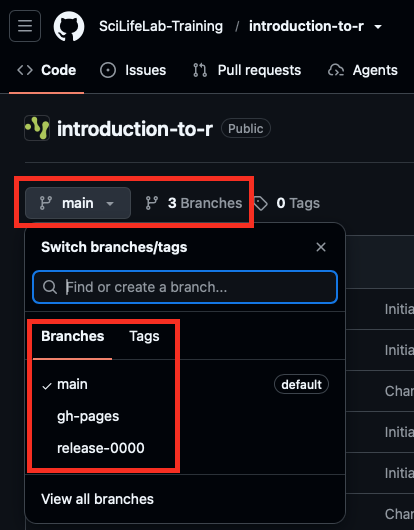
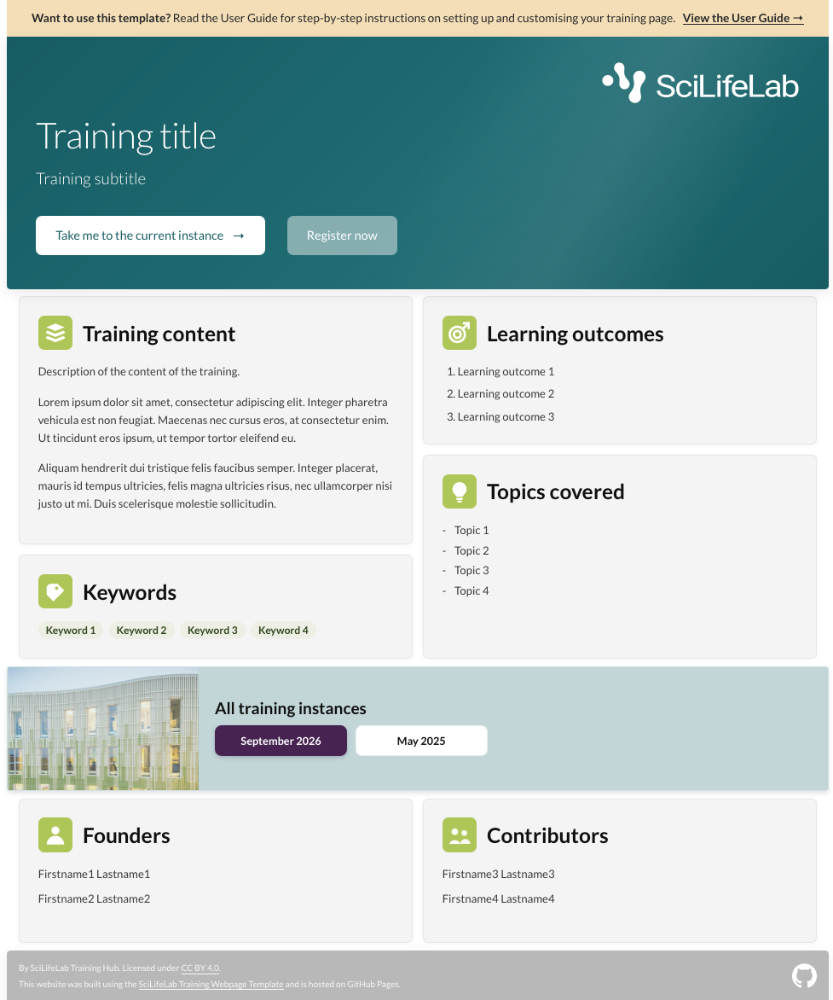
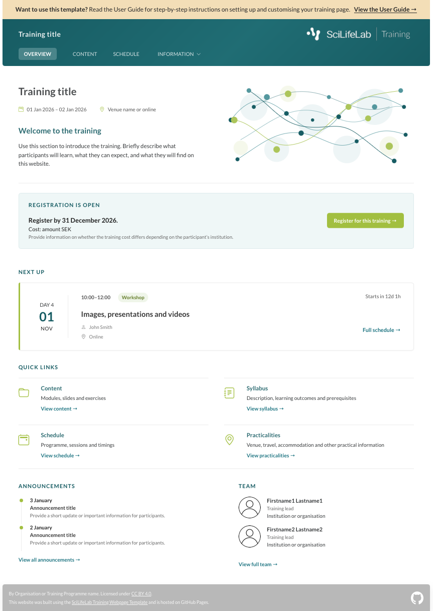
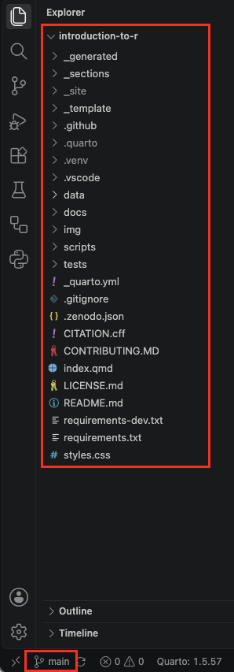
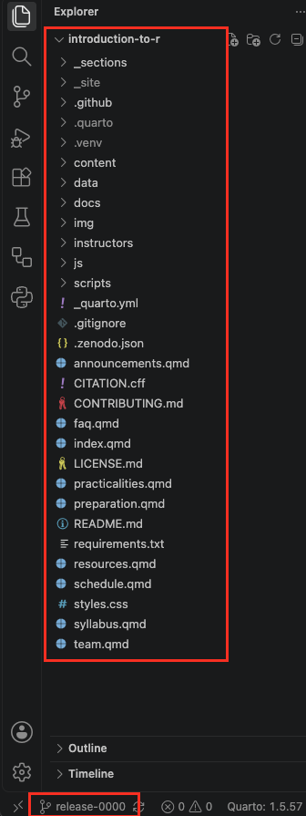
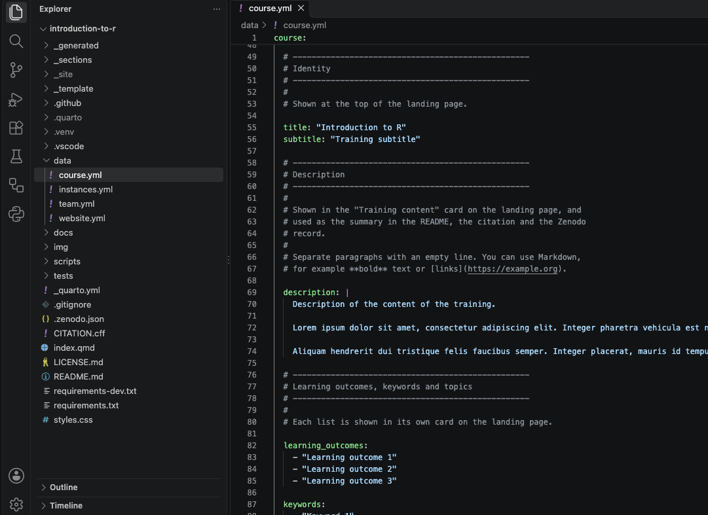

4 Repository structure
You now know the routine for making a change to your training website, and how to publish it (see Regular workflow).
Before fully making the template your own, with the information and materials of your training, it helps to know how the repository is organised.
This chapter shows you where different parts of the website live, so you always know where to make a change.
4.1 Branches
Your training repository is divided into branches. Each branch holds the files for one part of your website. A new repository made from the template has three branches: main, release-0000 and gh-pages.

Each of these branches holds the files for one part of your website:
The main branch holds the landing page: the general page about your training, with its description, learning outcomes and team, and links to every time the training is given.

The gh-pages branch holds the published website: the finished pages that visitors see. GitHub builds them from your other branches and updates this branch automatically every time you push a change.
Never edit the gh-pages branch yourself. GitHub updates it automatically every time you push a change to one of the other branches.
- The release-0000 branch is an example training instance: the website for one time the training is given, with its dates, schedule, practical information, team and training materials. You use it as the starting point for each new training instance, which gets a branch of its own.

Because each training instance has its own branch, you can prepare the next training without changing the website of an earlier one. Participants of earlier trainings can always go back to the materials as they were.
Branch names
A training instance branch is named release- followed by the year and month of the training, written as YYMM. For example, release-2705 is the training instance held in May 2027.
An example
This is what the branches look like in a repository for a training that has been given twice, in May 2026 and May 2027:
Your repository
│
├── main The landing page: the general page about your
│ training, with links to every training instance.
│
├── release-2605 The website of your training in May 2026.
├── release-2705 The website of your training in May 2027.
│
│
└── gh-pages The published website. Updated automatically.In this repository, you would work on these branches:
| I want to… | I work on branch… |
|---|---|
| Change the landing page | main |
| Edit the materials of the May 2026 training | release-2605 |
| Fix a typo on the May 2027 website | release-2705 |
| Set up the next training instance | A new release- branch: see Training instances |
You work on one branch at a time. To learn how to switch to another branch in VS Code, see Switch branch.
4.2 Three kinds of files
When you open a branch of your repository in VS Code, you see many files and folders. Most of these you never have to edit, you only have to work with a few of them. On all branches, the files fall into three groups:
| Icon | Kind | What it means for you |
|---|---|---|
| ✏️ | Files you edit | Your information and materials. This is where you make your changes. |
| 🔄 | Files that are updated automatically | The template creates and updates these files automatically. You should not edit them, but if you accidentally do, your edits will automatically be overwritten. |
| 🔒 | Files you can leave alone | The parts that make the template work, you never need to change these. |
The automatically updated files 🔄 often appear in the Source Control panel when you only edited one ✏️ file. That’s expected: commit them together with your own changes, as described in Commit and push your changes.
4.3 Files on the main branch
On the main branch, everything for your training’s landing page lives in these files and folders:

The table below explains what each one is for, and whether you edit it ✏️, it’s updated automatically 🔄, or you can leave it alone 🔒.
| File or folder | What it contains | Kind of file |
|---|---|---|
data/course.yml |
The title, description, learning outcomes, etc. of your training, and how others may reuse and cite it | ✏️ |
data/team.yml |
The people behind the training | ✏️ |
data/website.yml |
The logos, button texts and footer of the landing page | ✏️ |
data/instances.yml |
The list of training instances, with links to their websites | ✏️ |
img/ |
The images and logos used on the landing page | ✏️ |
docs/ |
The README for your training (_template-README.md), which you copy over README.md when you start, and documentation for developers of the template |
✏️ |
README.md |
The description shown on your repository’s main page on GitHub. The parts between <!-- generated:... --> lines are updated automatically; you can edit the rest |
✏️ 🔄 |
_generated/ |
The sections of the landing page, built from your data files | 🔄 |
CITATION.cff |
How to cite your training, built from your data files | 🔄 |
.zenodo.json |
The information Zenodo uses when you publish your training, built from your data files | 🔄 |
LICENSE.md |
The full text of the licence of your training: CC BY 4.0, unless you choose another licence in data/course.yml. Only replace it if you do |
✏️🔒 |
CONTRIBUTING.md |
How others can report problems and suggest improvements to your training.Ready to use, but you can adapt it if you like | ✏️🔒 |
index.qmd, _sections/ |
The building blocks that put the landing page together | 🔒 |
styles.css |
The look of the website: colours, fonts and layout | 🔒 |
_template/ |
Information about the template itself, used only while template mode is on. You can delete it once you’ve switched template mode off | 🔒 |
scripts/, tests/ |
The scripts that build the website, and the checks that test them | 🔒 |
.github/ |
The automatic processes that publish your website on GitHub | 🔒 |
.vscode/ |
Settings for VS Code, such as the extensions it recommends when you open the repository | 🔒 |
.gitignore |
The list of files that stay on your computer and are never uploaded to GitHub, such as your preview and environment | 🔒 |
_quarto.yml, requirements.txt, requirements-dev.txt |
Settings for Quarto, and the Python packages the scripts need | 🔒 |
When you preview your website, a few more folders appear on your computer: _site/ (the website itself), .quarto/ and .venv/ (your environment). They are listed in .gitignore, so they are never uploaded to GitHub, and you can ignore them.
4.4 Files on a training instance branch
A training instance branch has the same structure as main, plus the information pages of that training instance, your training materials, and notes for instructors who teach or reuse the training.

The table below explains what each one is for, and whether you edit it ✏️, it’s updated automatically 🔄, or you can leave it alone 🔒.
| File or folder | What it contains | Kind of file |
|---|---|---|
data/course.yml |
The title, dates, location and description of this training instance, and how others may reuse and cite it (required) | ✏️ |
data/team.yml |
The organisers, instructors and helpers (required) | ✏️ |
data/website.yml |
The logos, texts and sections of the overview page, and the footer (required) | ✏️ |
data/schedule.yml |
The schedule of the training (optional) | ✏️ |
data/announcements.yml, practicalities.yml, preparation.yml, faq.yml, resources.yml |
The information pages (all optional) | ✏️ |
content/ |
Your training materials | ✏️ |
instructors/ |
Notes for instructors: timing, preparation and teaching notes for each module. Not shown on the website, but anyone can read it on GitHub | ✏️ |
img/ |
The images, logos and photos used on the website | ✏️ |
docs/ |
The README for your training (_template-README.md), which you copy over README.md when you start, example files used in the example module pages; and documentation for developers of the template |
✏️ |
README.md |
The description GitHub shows when someone opens this branch. The parts between <!-- generated:... --> lines are updated automatically; you can edit the rest |
✏️ 🔄 |
CONTRIBUTING.md |
How others can report problems and suggest improvements to your training. Ready to use, but you can adapt it if you like | ✏️🔒 |
LICENSE.md |
The full text of the licence of your training: CC BY 4.0, unless you choose another licence in data/course.yml. Only replace it if you do |
✏️🔒 |
_generated/ |
The sections of the website, built from your data files when you preview. Not uploaded to GitHub | 🔄 |
CITATION.cff, .zenodo.json |
How to cite this training instance, and the information Zenodo uses, built from your data files | 🔄 |
index.qmd, schedule.qmd, team.qmd and the other .qmd files |
The pages of the website. They collect their content from your data files | 🔒 |
_sections/, js/, styles.css |
The building blocks, interactive parts and look of the website | 🔒 |
scripts/, .github/ |
The scripts that build the website, and the automatic processes that publish it | 🔒 |
_quarto.yml, requirements.txt, .gitignore |
Settings for Quarto, the Python packages the scripts need, and the list of files that are never uploaded to GitHub | 🔒 |
When you preview your website, a few more folders appear on your computer: _site/ (the website itself), .quarto/ and .venv/ (your environment). They are listed in .gitignore, so they are never uploaded to GitHub, and you can ignore them.
4.5 Data files
As the tables above show, most of the files you edit in the main branch as well as the instance branches are data files: the files ending in .yml in the data folder.
When you open a data file, for example data/course.yml on the main branch, you see three kinds of text. VS Code shows each in its own colour:

- Explanations (grey in the screenshot): lines that start with
#. They explain how the file works and what each field does, and don’t appear on your website. You can delete them if you prefer a shorter file, but they are useful to keep while you are getting to know the template. - Field names (green): the word before the colon, for example
title:. They tell the template where each piece of information goes on your website. Never change field names. If you do, the template can’t find that information any more. - Values (blue): the text after the colon, usually between quotation marks. This is what you change. It is the information that appears on your website.
For example, in this line:
title: "Training title"title is the field name: leave it as it is. "Training title" is the value: replace it with the title of your training.
The colours depend on the colour theme you use in VS Code, so yours may look different from the screenshot. The rule is always the same: lines starting with # are explanations, the word before the colon is the field name, and the text after the colon is the value you change.
Data files are very sensitive to layout:
- Keep the spaces at the start of each line exactly as they are. They show which information belongs together.
- Keep the quotation marks around values.
- Lines starting with
-are list items. To add an item, copy a whole line and change its value.
If the preview shows an error after you save a data file, check these first. The error message usually names the file and the line.